Cross-Validation Results: Automatic Report and Interpretation
Metrics by Fold
| Fold |
R2 |
MSE |
RMSE |
MAE |
| 1 |
-0.593396 |
1211.306071 |
34.803823 |
28.492857 |
| 2 |
-0.080919 |
231.196667 |
15.205153 |
13.283333 |
| 3 |
-7.864361 |
861.812917 |
29.356650 |
28.241667 |
| 4 |
-6.928621 |
792.862083 |
28.157807 |
24.158333 |
| 5 |
-0.404302 |
1135.144167 |
33.691901 |
28.050000 |
Feature Importance (mean ± std)
| feature |
mean_importance |
std_importance |
| semantic |
0.223739 |
0.109927 |
| criq |
0.121364 |
0.055887 |
| reyword |
0.115483 |
0.078293 |
| denomdescr |
0.094418 |
0.086120 |
| span_back |
0.093750 |
0.034830 |
| reyfig |
0.093655 |
0.017429 |
| mmse |
0.076535 |
0.048916 |
| phonemic |
0.070754 |
0.024467 |
| span_for |
0.065745 |
0.022710 |
| trog |
0.044559 |
0.020314 |
Main Plots
feature_importances_mean_std.png
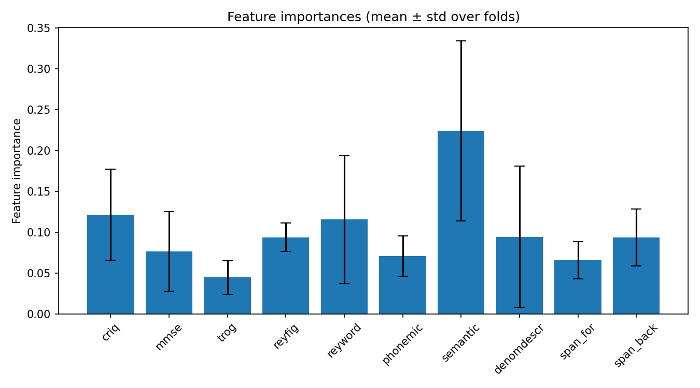
feature_importances_correlation_heatmap.png
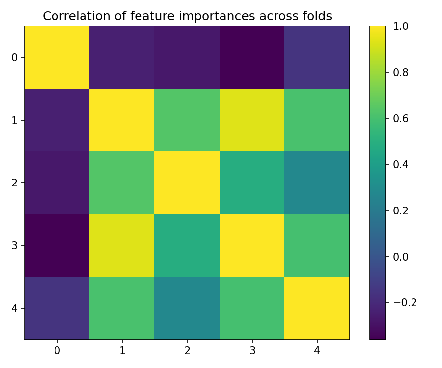
best_fold_2_feature_importances.png
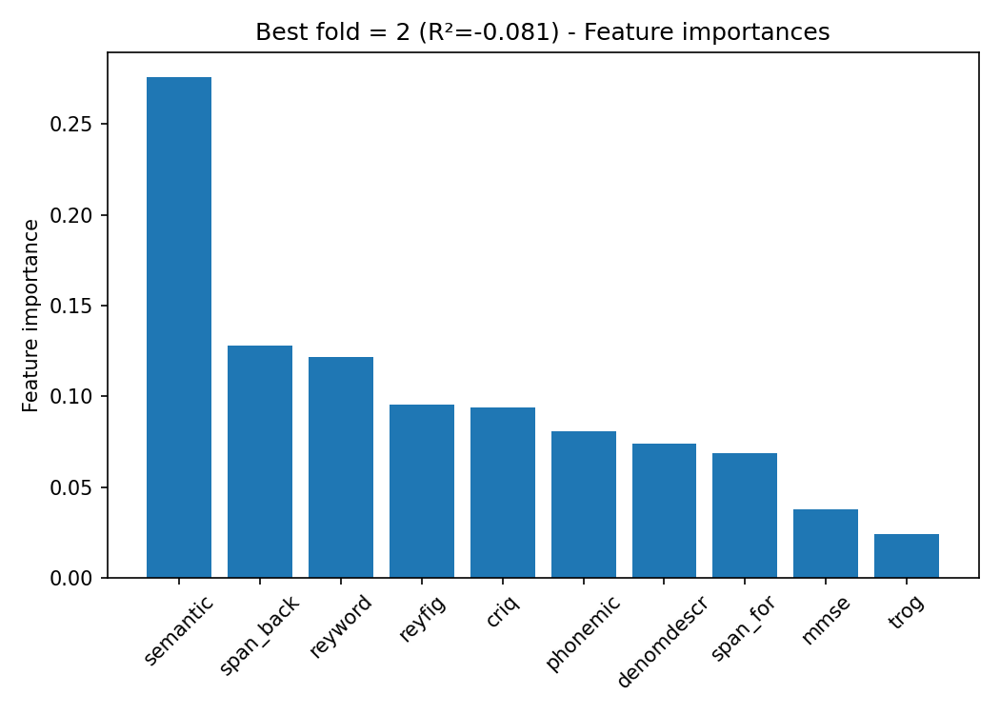
True vs Predicted Scatter Plots (by fold)
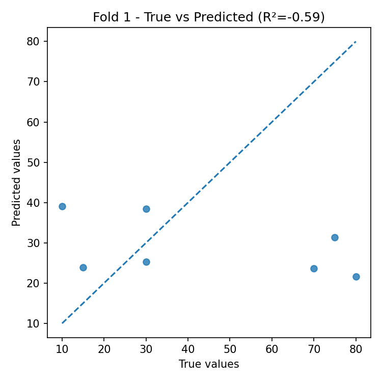
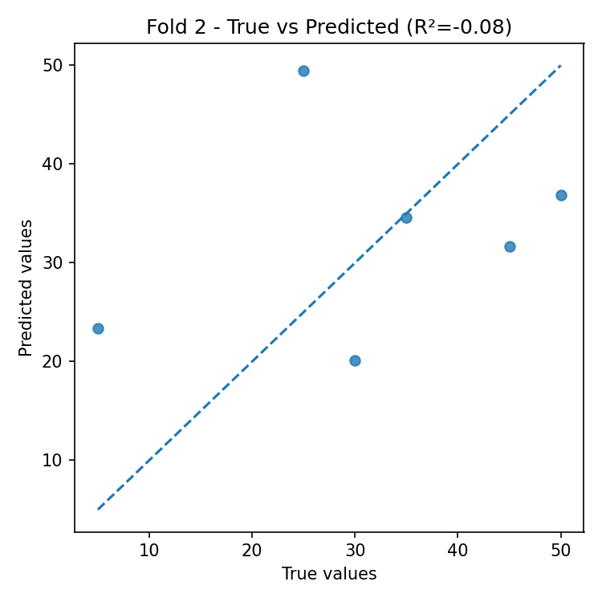
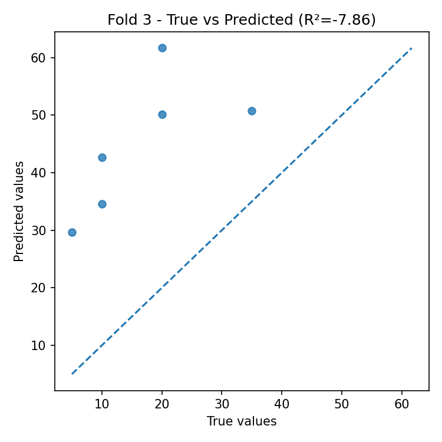
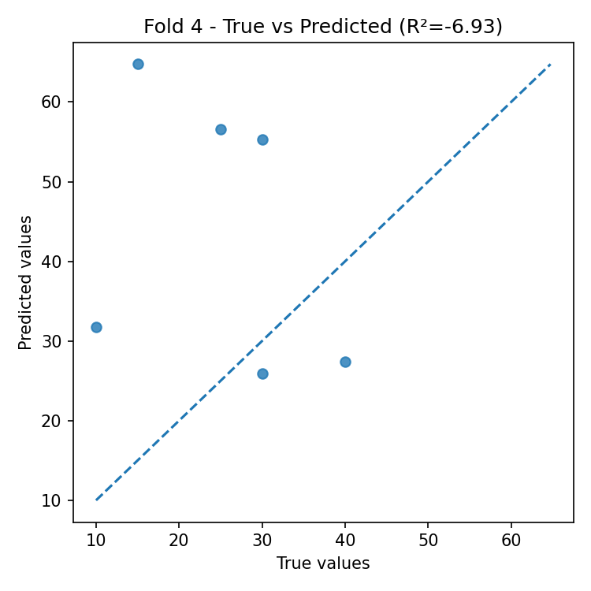
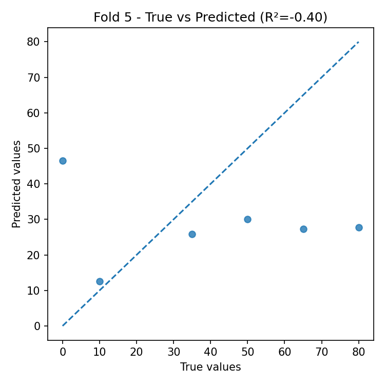
Residual Plots (by fold)
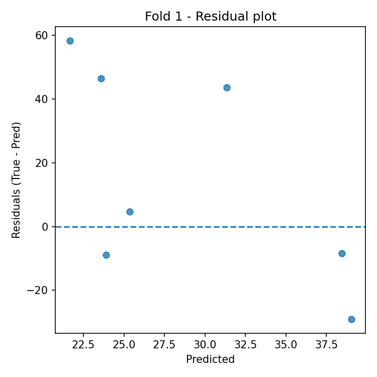
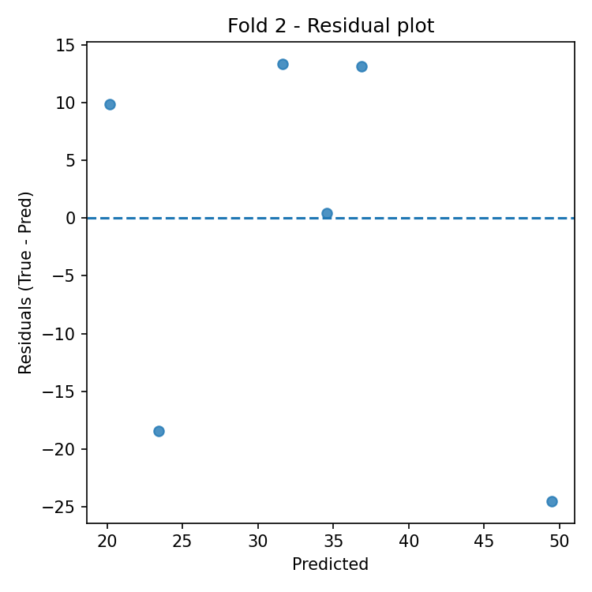
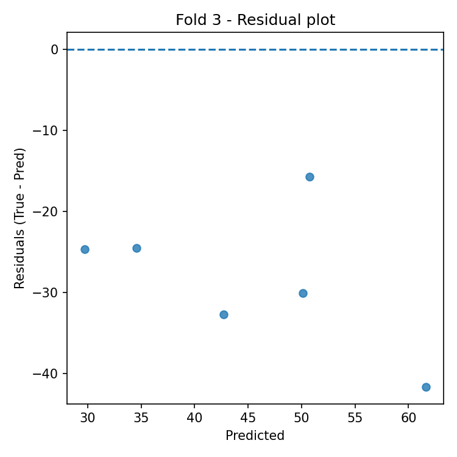
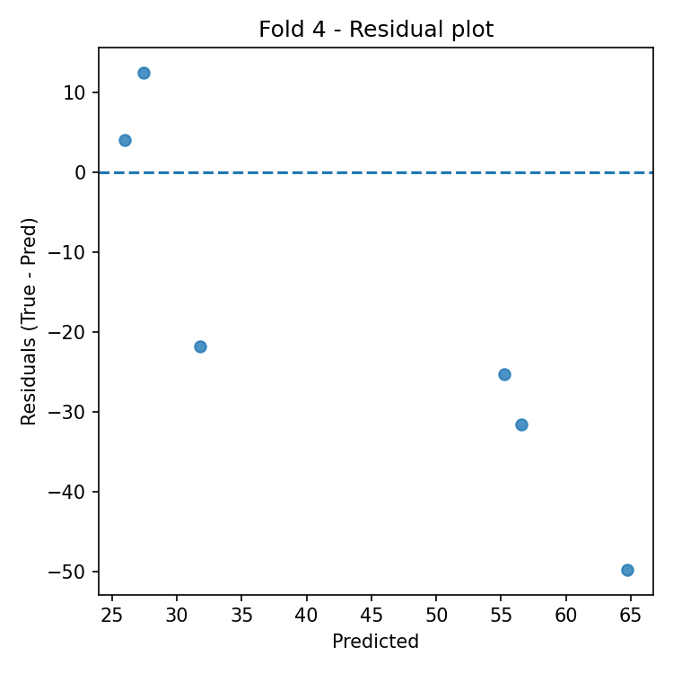
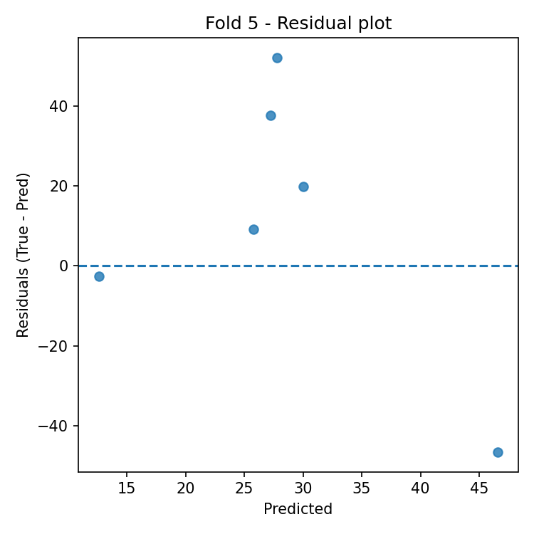
Automatic Interpretation
Overall Performance
- Mean R² across folds: -3.174 (± 3.873).
- Average error: RMSE = 28.243, MAE = 24.445 (same unit as target variable).
Model Stability
- R² variability across folds is high (std = 3.873).
- Average feature importance stability across folds: 0.050 (lower = more stable).
Most Important Features (average across all folds)
- Top-3: semantic (0.224), criq (0.121), reyword (0.115).
Best Fold
- Best fold: 2 with R² = -0.081.
- In the best fold, the most important features are: semantic (0.276), span_back (0.128), reyword (0.121).
Residual Analysis (best fold)
- Residuals–predictions correlation: -0.371 (0 ≈ absence of linear bias).
- |Residuals|–predictions correlation: 0.376 (positive values indicate possible heteroscedasticity).
- Outliers (|res| > 3·std): 0.